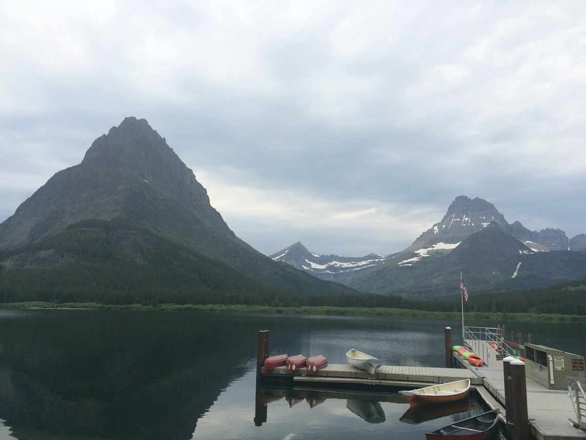
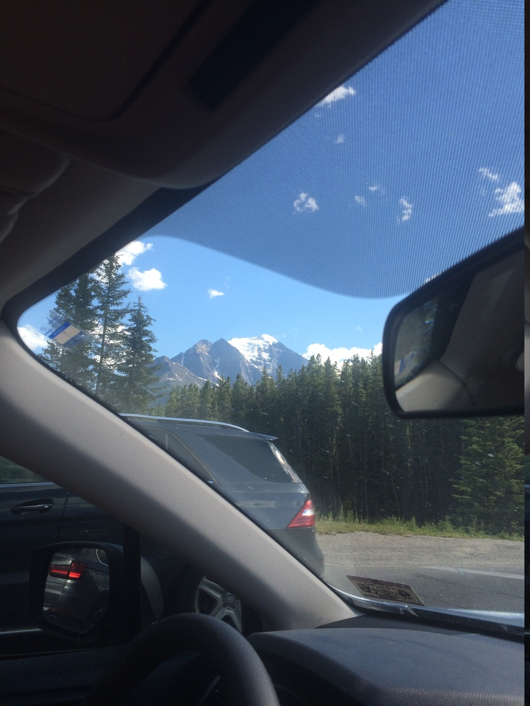
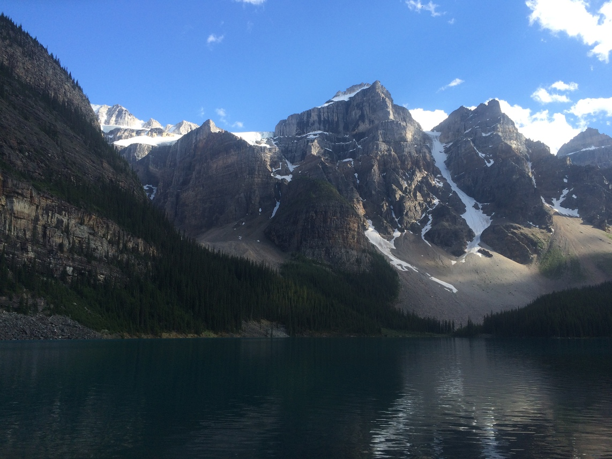
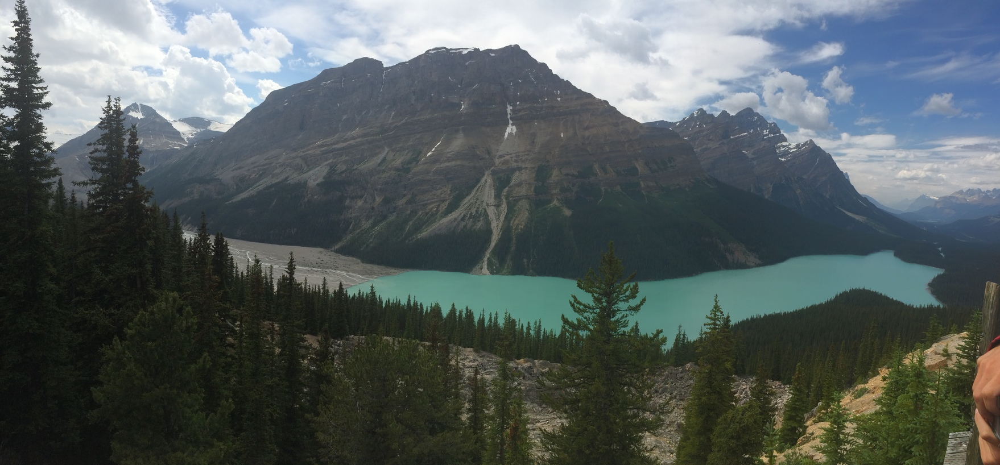
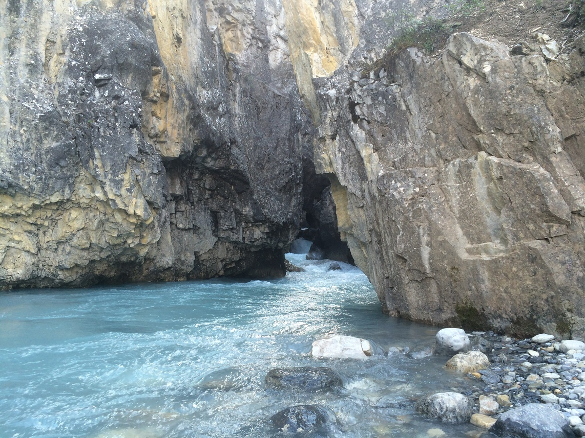
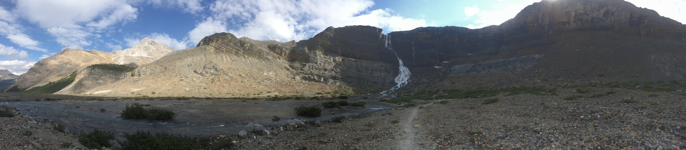
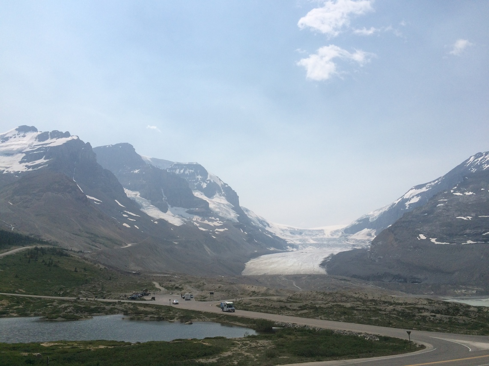
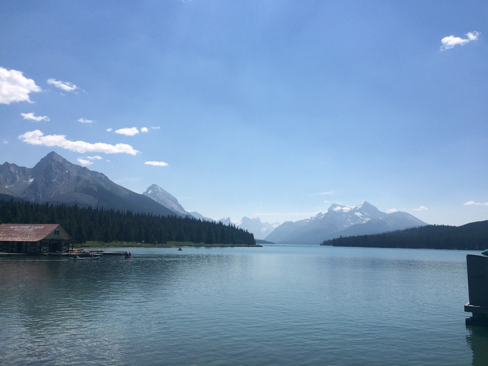
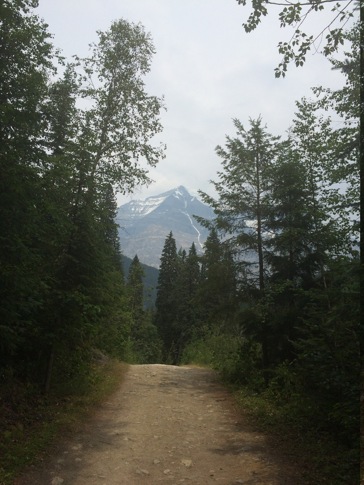

Finding Glaciers
We've found tons of glaciers this trip! Here's some of my (Kyle) favorite pictures.
 Here's the only glacier we actually saw in Glacier National Park. Turns out, most of the glaciers there are gone, and in about 20 years, it's expected that all of them will be gone!
 Here's the very first glacier we saw in Canada!
 Here's Lake Moraine in Banff National Park, Eric brought us up here after we stopped at some hot springs.
 Glaciers produce a lot of dust when they melt, this gives the lakes and rivers around them a teal color.
 Here's a slot carved from river water, see how teal it is?
 That's the waterfall from a glacier that feeds the river above.
 Here's one of the most popular glaciers in Jasper. You can pay $70 a person to take a bus up onto the glacier and walk around for a few minutes. We decided against that...
 Not all of the lakes up here are the teal color, some look "normal".
 In the distance is Mt. Robson, while the snow on the left isn't a glacier, the far side has a huge one. Robson is a amazing looking mountaineering mountain.. Someday!